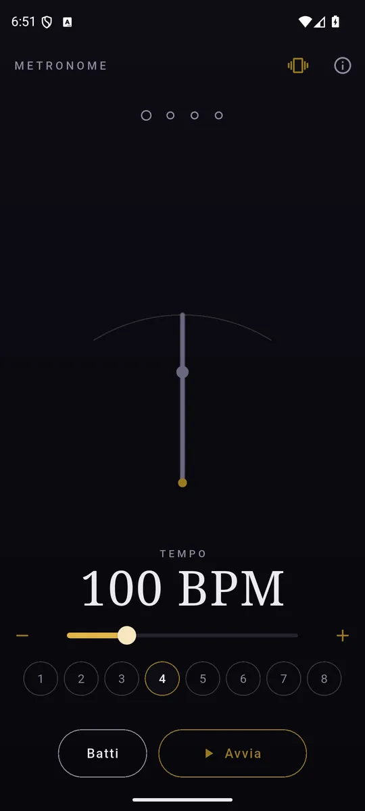
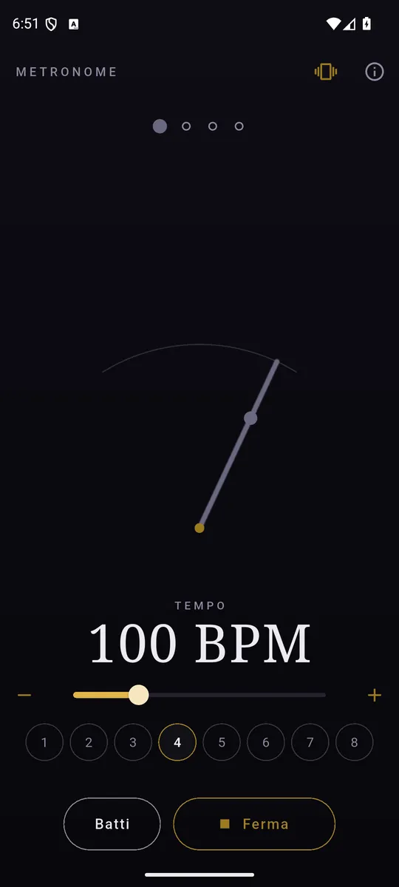
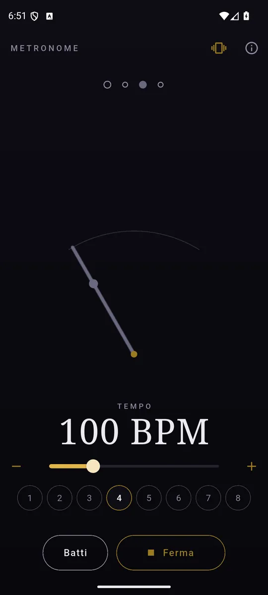

ItalianoEnglish
Un metronomo si giudica su una cosa sola: se i colpi sono davvero equidistanti. Tutto il resto è decorazione intorno a quella domanda.

Da 30 a 300: slider, tasti singoli, o batti il tempo a dito. 
Il primo movimento è accentato: la battuta si sente. 
Il pendolo legge lo stesso numero da cui nasce il suono.
Perché il tempo non sbanda
Questo metronomo non programma nessun colpo. Disegna una battuta intera in un buffer, con i click esattamente dove vanno, e la fa ripetere al motore audio: da quel momento la spaziatura è esatta al campione, e non c'è timer che possa arrivare in ritardo perché il telefono sta facendo altro. È anche il motivo per cui nel pacchetto non c'è nessun file audio — un click registrato andrebbe programmato, e la programmazione è ciò che sbanda.
Cosa c'è
- Da 30 a 300 BPM, con lo slider e i due tasti per il singolo battito.
- Battute da 1 a 8 movimenti, con il primo accentato: si sente più acuto, così la battuta si riconosce senza contare.
- Batti il tempo. Quattro tocchi e il metronomo va a quella velocità — la media dei tocchi, non l'ultimo, così un tocco storto non butta via tutto.
- Il pendolo, che oscilla dallo stesso numero da cui è stato disegnato il suono: quello che vedi e quello che senti sono la stessa aritmetica.
- Vibrazione a tempo, se la vuoi, con l'accento più forte anche sotto le dita.
- Lo schermo resta acceso mentre suona.
- In italiano e in inglese, secondo la lingua del telefono.
I tuoi dati restano tuoi
Metronome non chiede nessun permesso: niente account, niente registrazione, nessun server, e della rete ha bisogno solo per gli annunci.
Come si paga
Con un banner ancorato in fondo, e basta: nessun annuncio mentre suoni, nessun abbonamento, nessuna suddivisione tenuta in ostaggio.
Dove trovarlo
Non è ancora su Google Play. Quando ci sarà, il collegamento comparirà qui.